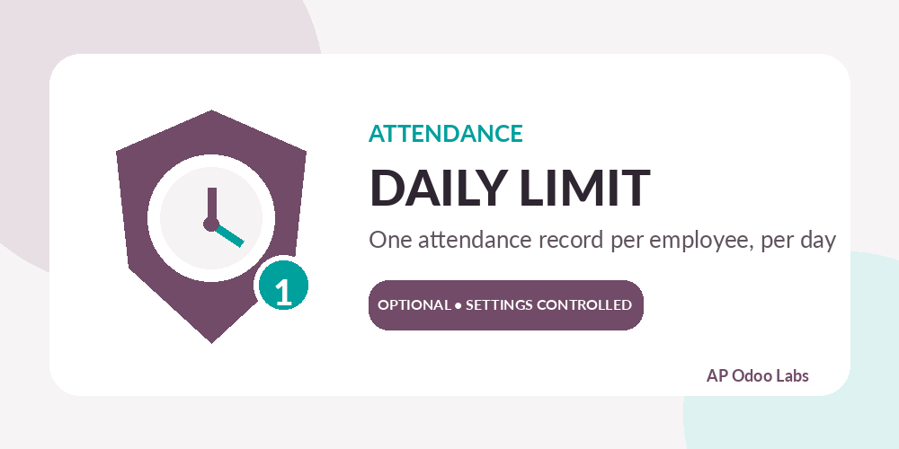
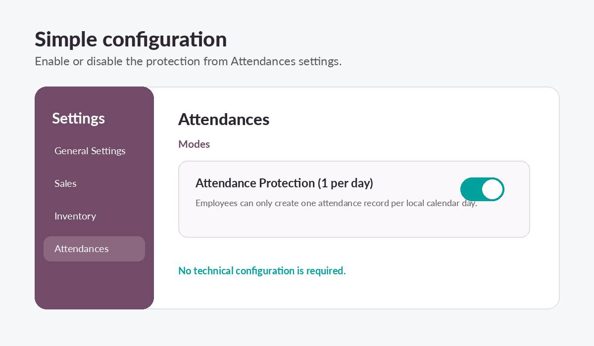
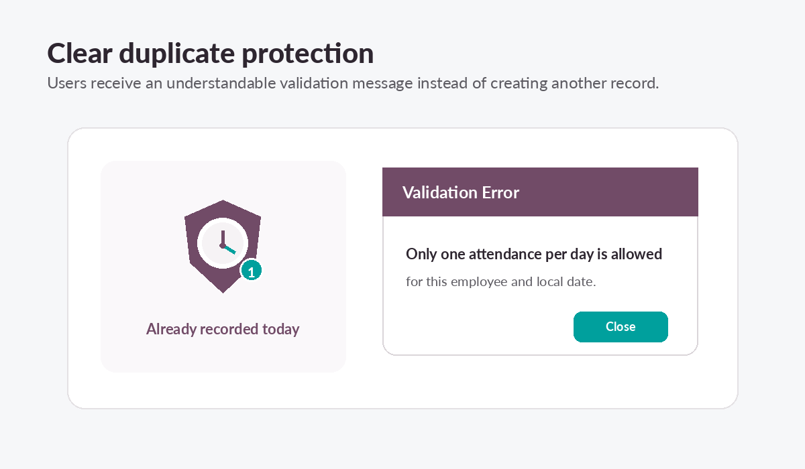
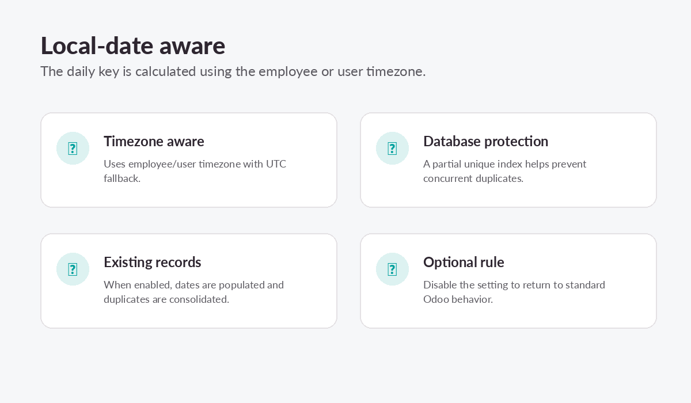

Attendance: One Check-in/Out per Day
Prevent accidental duplicate attendance records with an optional, timezone-aware daily protection rule.
Odoo 18
Community & Enterprise
LGPL-3
Free
Why use this module?
One record per dayStops a second attendance record for the same employee and local calendar date.
Optional settingActivate the protection from Attendances settings and disable it whenever standard behavior is required.
Timezone awareUses the employee or user timezone, with a safe UTC fallback.
Concurrency safeA database-level partial unique index helps protect against simultaneous duplicate creation.
Simple configuration

Clear user feedback

Designed for reliable daily control

Important for existing databases:
When the rule is enabled, existing same-day duplicate records are consolidated. The earliest record is retained, the latest available check-out is preserved, and additional duplicate records are removed. Back up the database before enabling the option in production.